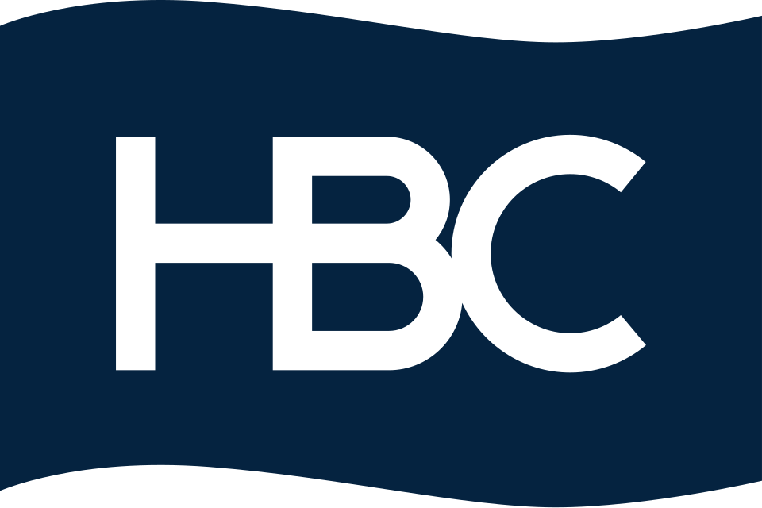

허드슨 베이 회사 Hudson's Bay Company
허드슨 베이 회사(Hudson's Bay Company)는 1670년 캐나다 지역의 모피 교역을 위해 설립된 잉글랜드의 특허 기업이며, 현재는 캐나다 최대의 소매업체이다.
최종 업데이트

허드슨 베이 회사는 어떤 브랜드인가
허드슨 베이 회사(Hudson's Bay Company)는 1670년에 설립되어 북미, 특히 캐나다 지역의 모피 교역을 담당했던 잉글랜드의 특허 기업이자 국책 회사이다. 현재는 캐나다 최대의 소매업을 중심으로 하는 기업으로, 캐나다 유일의 백화점인 '더 베이(the Bay)'를 운영하고 있다.
현존하는 북미 대륙에서 가장 오래된 기업이며, 주식은 토론토 증권거래소에 상장되어 있다. 본사는 브램턴에 있다.
2010년 동계 올림픽의 로컬 스폰서로 활동했다.
허드슨 베이 회사는 어떻게 시작되고 성장했나
허드슨 베이 회사는 1670년 5월 피에르-에스프릿 래디슨과 메다드 데 스그로즈일리어스 등이 참여하여 설립되었으며, 잉글랜드 왕 찰스 2세의 칙허를 받은 잉글랜드의 특허 기업이자 국책 회사였다. 칙허장에 기록된 정식 명칭은 '허드슨만에 있는 무역에 종사하는 영국의 총독 및 잉글랜드 모험가'이며, 허드슨만으로 흘러들어가는 모든 하천 유역인 루퍼트 랜드에서 모피 독점거래권을 부여받았다.
초대 총독은 찰스 2세의 사촌인 컴벌랜드 공작 루퍼트가 맡았으며, 이후 요크 공작 제임스와 말버러 공작 존 처칠 등이 총독을 지냈다. 1821년에는 경쟁 업체인 북서 회사를 합병했고, 1869년에는 루퍼트 랜드를 캐나다 자치령 정부에 양도하면서 사업의 중심을 모피 무역에서 소매로 옮겼다.
허드슨 베이 회사의 브랜드 아이덴티티는 무엇인가
허드슨 베이 회사는 모피 교역을 위한 특허 기업에서 출발해 캐나다 최대의 소매업체로 전환한, 현존하는 북미 대륙 최고령 기업이라는 점에서 다른 브랜드와 구별된다.
허드슨 베이 회사의 대표 제품과 서비스는 무엇인가
허드슨 베이 회사는 설립 초기에는 루퍼트 랜드 유역에서 모피 독점거래권을 바탕으로 모피 교역을 주된 사업으로 삼았다. 1869년 루퍼트 랜드를 캐나다 자치령 정부에 양도한 이후에는 사업의 중심을 소매업으로 옮겼다.
이후 캐나다 최대의 소매업체로 발전했으며, 현재는 캐나다 유일의 백화점인 '더 베이(the Bay)'를 운영하고 있다. 회사 주식은 토론토 증권거래소에 상장되어 거래되고 있다.
허드슨 베이 회사는 지금 어떤 상태인가
허드슨 베이 회사는 현재 캐나다 최대의 소매업을 중심으로 하는 기업이며, 캐나다 유일의 백화점인 '더 베이(the Bay)'를 운영하고 있다. 본사는 브램턴에 있으며, 주식은 토론토 증권거래소에 상장되어 있다.
2010년 동계 올림픽에서는 로컬 스폰서로 활동했다.
허드슨 베이 회사 로고는 어떻게 변해왔나
자주 묻는 질문
허드슨 베이 회사는 어느 나라 브랜드인가요?
허드슨 베이 회사는 캐나다의 리테일·커머스 브랜드입니다.
허드슨 베이 회사의 브랜드 아이덴티티는 무엇인가요?
허드슨 베이 회사는 모피 교역을 위한 특허 기업에서 출발해 캐나다
허드슨 베이 회사의 대표 제품은 무엇인가요?
허드슨 베이 회사는 설립 초기에는 루퍼트 랜드 유역에서 모피 독점거래권을 바탕으로 모피 교역을 주된 사업으로 삼았다.
허드슨 베이 회사는 현재 어떤 상태인가요?
허드슨 베이 회사는 현재 캐나다
허드슨 베이 회사의 창업자는 누구인가요?
허드슨 베이 회사의 창업자는 피에르 - 에스프릿 래디슨, 메다드 데 스그로즈일리어스입니다(위키데이터 기준).
허드슨 베이 회사의 본사는 어디에 있나요?
허드슨 베이 회사의 본사는 브램턴에 있습니다(위키데이터 기준).
허드슨 베이 회사의 공식 웹사이트는 어디인가요?
허드슨 베이 회사의 공식 웹사이트는 https://www.hbc.com 입니다.
출처와 검증
허드슨 베이 회사 관련 참고: 공식 웹사이트 · 위키데이터 Q76039 · 한국어 위키백과 · 영어 위키백과. 브랜드명은 한글과 원어를 함께 표기하되 데이터에 없는 표기는 만들지 않습니다. 기원 국가·설립연도는 검수된 정의문에서 확인된 값을 우선하고, 없을 때만 공식 웹사이트 URL이 일치하는 위키데이터 개체의 값을 씁니다. 위키데이터 값은 2026-09-26 기준입니다.